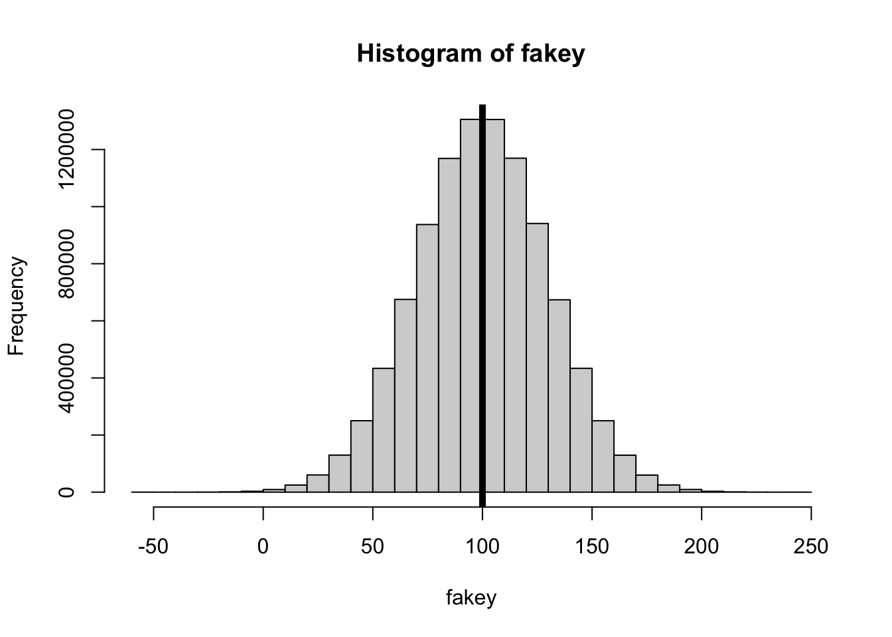
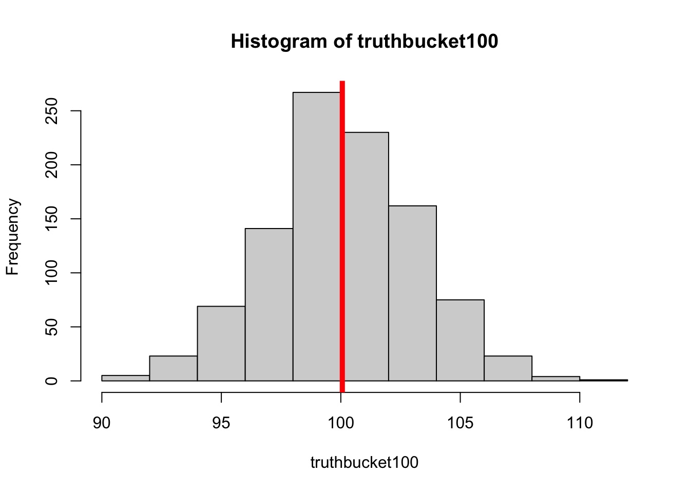
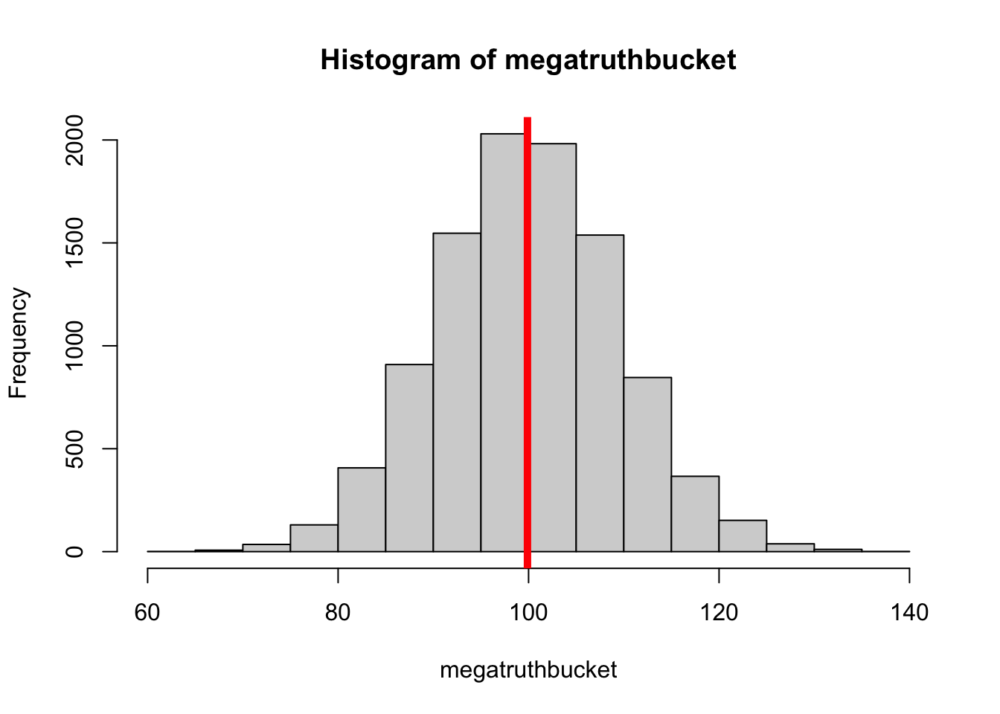
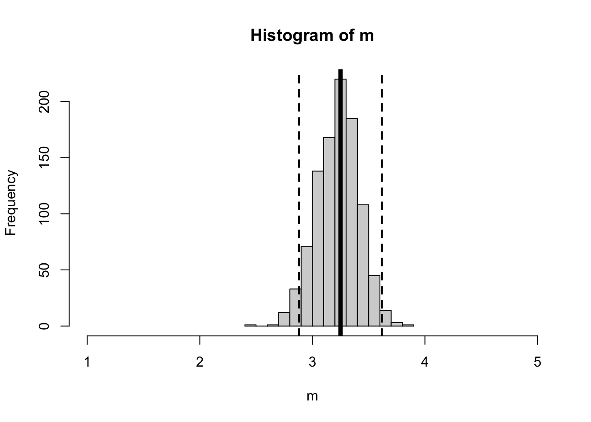
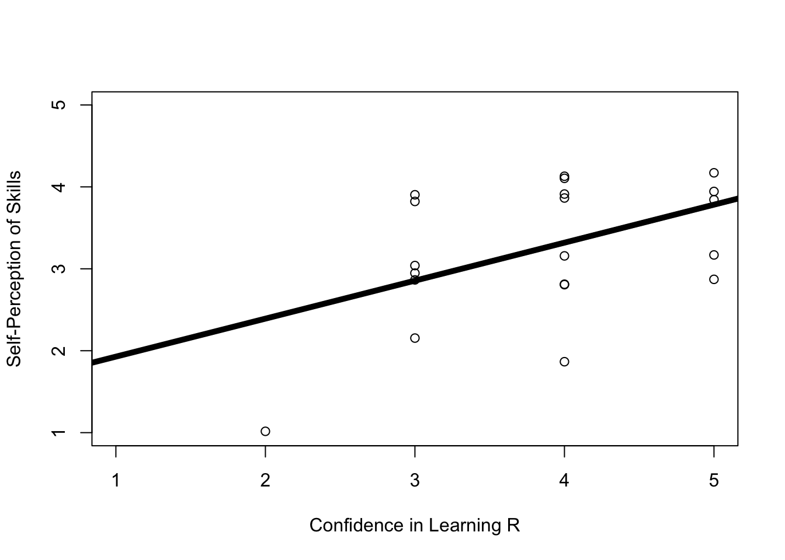

Load the onboarding dataset (name this d to follow along with professor code in lecture).
The variable can.forloop asked students whether they could write a for-loop or not.
What is the difference in the number of students who said that YES they could for-loop, compared to the number who said either NO, MAYBE, or had NO IDEA?
Great to find the answer, but try to find a way to get R to calculate this difference using code so you don’t have to manually type in any numbers for the calculation. (Hint : use indexing and the summary function.)
time
1 2025/09/08 12:17:08 PM MDT
2 2025/09/08 12:19:21 PM MDT
3 2025/09/08 1:43:08 PM MDT
4 2025/09/09 2:29:56 PM MDT
5 2025/09/09 5:29:25 PM MDT
6 2025/09/09 11:32:21 PM MDT
area has.laptop write.code
1 developmental, looking into industrial organizational Yes Yes
2 Clinical Yes Yes
3 Social / Personality Yes Yes
4 Behavioral and Systems Neuroscience Yes Yes
5 Social / Personality Yes Yes
6 Social / Personality Yes Yes
know.prog has.data know.r can.import can.clean can.graph
1 No Yes 2 Maybe Could Not Do This Could Not Do This
2 Yes Yes 3 Yes Yes Yes
3 No No 3 Yes Maybe Maybe
4 Yes Yes 3 Yes Maybe Yes
5 Yes 3 Yes Maybe Yes
6 Yes Yes 3 Yes Yes Yes
can.render can.lm can.interp can.pvalue can.sevsd
1 No Idea What This Is. Could Not Do This Yes Yes Maybe
2 Maybe Yes Yes Yes Yes
3 Could Not Do This Maybe Yes Yes Yes
4 Maybe Maybe Yes Yes Yes
5 Maybe Maybe Maybe Yes Yes
6 Maybe Yes Maybe Yes Maybe
can.95ci can.forloop self.skills class.skills self.excite
1 Maybe No Idea What This Is. 3 4 5
2 Maybe Could Not Do This 2 4 4
3 Yes Could Not Do This 3 3 5
4 Yes Yes 4 3 5
5 Maybe Maybe 3 3 4
6 Could Not Do This Could Not Do This 3 3 4
class.excite self.prep class.prep learn.concept learn.r can.science
1 5 4 4 4 3 3
2 3 3 3 4 4 4
3 4 4 4 4 4 3
4 5 5 5 5 5 4
5 4 4 4 4 4 4
6 4 4 4 5 4 5
should.science truth.people not.psychsci perf.pred noperf.pred too.complex
1 5 2 1 1 5 4
2 3 2 1 1 4 3
3 3 3 2 1 4 4
4 4 4 1 3 2 4
5 3 3 2 2 4 4
6 5 4 1 2 5 5
epistemology
1 Reality exists, but we may not be able to ever understand REAL TRUTH because our ability to study reality will always be influenced by people.
2 Reality exists, but we may not be able to ever understand REAL TRUTH because our ability to study reality will always be influenced by people.
3 Reality exists, but we may not be able to ever understand REAL TRUTH because our ability to study reality will always be influenced by people.
4 Reality exists, but we may not be able to ever understand REAL TRUTH because our ability to study reality will always be influenced by people.
5 Reality exists, but we may not be able to ever understand REAL TRUTH because our ability to study reality will always be influenced by people.
6 Reality exists, but we may not be able to ever understand REAL TRUTH because our ability to study reality will always be influenced by people.
consent
1 yes, you can add my responses to a class dataset.
2 yes, you can add my responses to a class dataset.
3 yes, you can add my responses to a class dataset.
4 yes, you can add my responses to a class dataset.
5 yes, you can add my responses to a class dataset.
6 yes, you can add my responses to a class dataset.
summary(d$can.forloop)
Could Not Do This Maybe No Idea What This Is.
5 9 1
Yes
5
# asking R to find the # of yeseslength(d$can.forloop[d$can.forloop =="yes"]) # says Zero because it's Yes not yes
[1] 0
length(d$can.forloop[d$can.forloop =="Yes"]) # says Zero because it's Yes not yes
sum(d$can.forloop =="Yes") # adds up all the True values.
[1] 5
summary(d$can.forloop) # shows me the frequency for each level
Could Not Do This Maybe No Idea What This Is.
5 9 1
Yes
5
summary(d$can.forloop)[4] # the number of Yes
Yes
5
# asking R to find the other groups.sum(!d$can.forloop =="Yes") # adds up all the True values for things that ARE NOT ! can.forloop = "Yes"
[1] 15
# finding the difference.sum(d$can.forloop =="Yes") -sum(!d$can.forloop =="Yes")
[1] -10
## OR; define quick objects to make the code a little more readable.notYes <-sum(!d$can.forloop =="Yes")Yes <-sum(d$can.forloop =="Yes")Yes - notYes
[1] -10
Announcements & Agenda
Agenda
11:10 - 12:00 : Check-In and Bootstrapping Review
12:00 - 12:40 : Break + Presentation
12:40 - 1:00 : Linear Models (the basics)
1:00 - 2:00 : Linear Models (there’s more)
Announcements
Lab 3. Just giving everyone credit. Four rooms was wild I don’t like thinking about it.
No Brian Exam. Professor did not know what he was doing but thinks two exams in two weeks is a BAD IDEA.
Mini Exam is in TWO Weeks. Yikes!!
I give you data and a question, you generate a report (in Quarto? Or just screenshot copy/paste for now is fine too.)
Data loading and cleaning.
Scale creating & descriptive statistics.
Linear Models
Bootstrapping
A fun challenge problem worth 1 point.
Ask questions if / when you have them. Don’t struggle on your own. Plenty of time to do that in other spaces!
We will practice / review next week (Lab 5 is a practice exam.)
Think it will be chill, and if not then professor takes the blame, alright?
RECAP : Estimating Sampling Error
the for-loop stuff we ended on.
We defined a fake dataset, called fakey with mean = 100 and sd = 30.
fakey <-rnorm(10000000, mean =100, sd =30)hist(fakey)abline(v =mean(fakey), lwd =5)

mean(fakey)
[1] 100.0031
We then took 1000 random samples (n = 10) from this fake dataset, calculated a statistic for each of these samples, and then
truthbucket <-array()for(i inc(1:1000)){ lilfakey <- fakey[sample(1:length(fakey), 10)] # ten random individuals from fakey. truthbucket[i] <-mean(lilfakey)}hist(truthbucket)abline(v =mean(truthbucket), lwd =5, col ='red')
mean(truthbucket) # the mean
[1] 99.84733
sd(truthbucket) # the standard deviation
[1] 9.471462
DISCUSSION :
ICE-BREAKER : least favorite candy?
why are we doing this (taking random samples from this fake dataset?)
TLDR : trying to see how valid the samples we take out of the dataset are to the population; one sample is not necessarily valid because of a) sampling bias (people may differ in systematic ways) and b) sampling error (random people in our sample are different from the population and might bias our results in non-systematic ways).
TLDR4R : estimating effects of sampling error
what does the distribution of fakey describe?
a NORMAL distributon of the entire population of individual scores.
the variation in our distribution illustrates the fact that people in the population differ.
what does the distribution of truthbucket describe?
a NORMAL distibution of a test statistic (the mean, in this case) from a sample of (n = 10) individuals.
the variation in our distribution illustrates sampling error (the fact that each sample will yeild a slightly different mean from our “true” population mean.
which graph (TRUTHBUCKET or FAKEY) would you want to minimize variation in?
minimize variation in TRUTHBUCKET = each sample will be more representative of the “true” population.
minimize variation in FAKEY = making people be more similar to each other…which can be bad from a celebrating individual differences perspective (yay bay area; boo fascism) but…increased variation —> “more error”
what are TWO things you could do in order to decrease the standard deviation of truthbucket?
increase the sample size
increase the number of samples
decrease the standard deviation of our original population
ACTIVITY : the TWO things you could do in order to decrease the standard deviation of lilfakey.
Thing One : increase the sample size?
truthbucket100 <-array()for(i inc(1:1000)){ lilfakey <- fakey[sample(1:length(fakey), 100)] # 100 random individuals from fakey. truthbucket100[i] <-mean(lilfakey)}hist(truthbucket100)abline(v =mean(truthbucket100), lwd =5, col ='red')

mean(truthbucket100) # the mean
[1] 100.0627
sd(truthbucket100) # the standard deviation
[1] 3.084897
Thing Two : Increase the number of samples.
megatruthbucket <-array()for(i inc(1:10000)){ lilfakey <- fakey[sample(1:length(fakey), 10)] # ten random individuals from fakey. megatruthbucket[i] <-mean(lilfakey)}hist(megatruthbucket)abline(v =mean(megatruthbucket), lwd =5, col ='red')

mean(megatruthbucket) # the mean
[1] 99.88343
sd(megatruthbucket) # the standard deviation
[1] 9.540754
Why does increasing the number of samples not influence the standard deviation of TRUTHBUCKET???
too long, zoned out : each sample is still taking from the same population and the same number of people…so increasing the number of samples doesn’t really influence how far away each individual statistic will be.
the standard deviation of truth bucket = an estimate of sampling error = equivalent to “standard error”.
bootstrapping.
the logic.
Okay, let’s work through a real example of using a for-loop to estimate sampling error with real data.
The idea is somewhat impossible (just like raising yourself up by your bootstraps) : we are going to :
use our ONE dataset….to generate NEW datasets
from each NEW dataset, we will :
calculate the test statistic we are interested in (i.e., the mean, but could be anything.)
save this test statistics.
examine the variation in test statistics.
Discussion : what’s a problem with this method? why do people do this??
an example.
Remember that in the onboarding survey, we saw people rated their own skills as lower than their classmates’ skills.
d <-read.csv("../datasets/Onboarding Data/honor_onboard_FA25.csv", stringsAsFactors = T, na.strings ="")par(mfrow =c(1,2))hist(d$self.skills, breaks =c(0:5), col ='black', bor ='white', main ="Computer Skills\n(Self-Perceptions)")hist(d$class.skills, breaks =c(0:5),col ='black', bor ='white', main ="Computer Skills\n(Perceptions of Classmates)")
mean(d$self.skills)
[1] 3.25
But would we expect to observe this same difference in a different sample of students???
Let’s use a for-loop to do this. Here’s the logic bootstrapping to test this.
d[sample(1:nrow(d), # taking our original dataset (d) and indexing new rows from 1-nrow(d)nrow(d), # tells R to resample the same size as our original datasetreplace = T), ] # randomly sampling with replacement. so one person in the original data can be in the new dataset multiple times.
time
9 2025/09/12 2:31:07 PM MDT
4 2025/09/09 2:29:56 PM MDT
5 2025/09/09 5:29:25 PM MDT
2 2025/09/08 12:19:21 PM MDT
18 2025/09/15 12:48:04 AM MDT
18.1 2025/09/15 12:48:04 AM MDT
12 2025/09/12 3:33:14 PM MDT
16 2025/09/14 10:28:13 PM MDT
15 2025/09/14 1:06:27 PM MDT
11 2025/09/12 2:54:38 PM MDT
17 2025/09/15 12:23:22 AM MDT
3 2025/09/08 1:43:08 PM MDT
19 2025/09/15 10:51:27 AM MDT
20 2025/09/15 11:04:10 AM MDT
18.2 2025/09/15 12:48:04 AM MDT
9.1 2025/09/12 2:31:07 PM MDT
19.1 2025/09/15 10:51:27 AM MDT
6 2025/09/09 11:32:21 PM MDT
13 2025/09/13 10:27:55 AM MDT
1 2025/09/08 12:17:08 PM MDT
area has.laptop
9 Clinical Yes
4 Behavioral and Systems Neuroscience Yes
5 Social / Personality Yes
2 Clinical Yes
18 Developmental Yes
18.1 Developmental Yes
12 Developmental Yes
16 Social / Personality Yes
15 Developmental Yes
11 Developmental Yes
17 Social / Personality Yes
3 Social / Personality Yes
19 Developmental Yes
20 Clinical Yes
18.2 Developmental Yes
9.1 Clinical Yes
19.1 Developmental Yes
6 Social / Personality Yes
13 Social / Personality Yes
1 developmental, looking into industrial organizational Yes
write.code know.prog has.data know.r can.import can.clean
9 Yes Yes Yes 3 Maybe Maybe
4 Yes Yes Yes 3 Yes Maybe
5 Yes <NA> Yes 3 Yes Maybe
2 Yes Yes Yes 3 Yes Yes
18 Yes Yes Yes 3 Maybe Maybe
18.1 Yes Yes Yes 3 Maybe Maybe
12 Yes Yes <NA> 3 Maybe Could Not Do This
16 Yes No Yes 3 Yes Maybe
15 Yes No Yes 2 Yes Maybe
11 Yes Yes No 2 Maybe Maybe
17 Yes Yes Yes 4 Yes Yes
3 Yes No No 3 Yes Maybe
19 Yes Yes Yes 4 Yes Yes
20 Yes Yes No 2 Maybe Maybe
18.2 Yes Yes Yes 3 Maybe Maybe
9.1 Yes Yes Yes 3 Maybe Maybe
19.1 Yes Yes Yes 4 Yes Yes
6 Yes Yes Yes 3 Yes Yes
13 Yes Yes No 3 Maybe Maybe
1 Yes No Yes 2 Maybe Could Not Do This
can.graph can.render can.lm can.interp
9 Yes Could Not Do This Maybe Yes
4 Yes Maybe Maybe Yes
5 Yes Maybe Maybe Maybe
2 Yes Maybe Yes Yes
18 Maybe Could Not Do This Maybe Maybe
18.1 Maybe Could Not Do This Maybe Maybe
12 Maybe No Idea What This Is. Maybe Maybe
16 Maybe Maybe Maybe Maybe
15 Yes No Idea What This Is. Maybe Maybe
11 Yes No Idea What This Is. Maybe Yes
17 Yes Yes Yes Yes
3 Maybe Could Not Do This Maybe Yes
19 Yes Yes Yes Yes
20 Maybe Maybe Maybe Maybe
18.2 Maybe Could Not Do This Maybe Maybe
9.1 Yes Could Not Do This Maybe Yes
19.1 Yes Yes Yes Yes
6 Yes Maybe Yes Maybe
13 Maybe Could Not Do This Could Not Do This Maybe
1 Could Not Do This No Idea What This Is. Could Not Do This Yes
can.pvalue can.sevsd can.95ci
9 Yes Maybe Maybe
4 Yes Yes Yes
5 Yes Yes Maybe
2 Yes Yes Maybe
18 Maybe Could Not Do This Maybe
18.1 Maybe Could Not Do This Maybe
12 Maybe Could Not Do This Maybe
16 Maybe Maybe Could Not Do This
15 Maybe Could Not Do This Maybe
11 Maybe Could Not Do This Could Not Do This
17 Yes Could Not Do This Yes
3 Yes Yes Yes
19 Yes Yes Yes
20 Maybe Maybe Maybe
18.2 Maybe Could Not Do This Maybe
9.1 Yes Maybe Maybe
19.1 Yes Yes Yes
6 Yes Maybe Could Not Do This
13 Could Not Do This Could Not Do This Could Not Do This
1 Yes Maybe Maybe
can.forloop self.skills class.skills self.excite class.excite
9 Yes 3 4 4 4
4 Yes 4 3 5 5
5 Maybe 3 3 4 4
2 Could Not Do This 2 4 4 3
18 Yes 3 5 5 5
18.1 Yes 3 5 5 5
12 Could Not Do This 4 4 5 5
16 Could Not Do This 3 3 5 5
15 Maybe 3 4 4 4
11 Maybe 1 4 3 3
17 Yes 4 4 5 5
3 Could Not Do This 3 3 5 4
19 Maybe 4 5 5 5
20 Maybe 4 5 4 2
18.2 Yes 3 5 5 5
9.1 Yes 3 4 4 4
19.1 Maybe 4 5 5 5
6 Could Not Do This 3 3 4 4
13 Maybe 4 5 4 4
1 No Idea What This Is. 3 4 5 5
self.prep class.prep learn.concept learn.r can.science should.science
9 3 3 4 5 3 3
4 5 5 5 5 4 4
5 4 4 4 4 4 3
2 3 3 4 4 4 3
18 3 5 4 3 3 5
18.1 3 5 4 3 3 5
12 5 5 4 4 4 4
16 5 5 5 5 4 4
15 3 4 4 3 4 4
11 2 4 4 2 5 5
17 5 5 5 5 4 3
3 4 4 4 4 3 3
19 4 5 5 4 5 5
20 3 4 5 3 4 3
18.2 3 5 4 3 3 5
9.1 3 3 4 5 3 3
19.1 4 5 5 4 5 5
6 4 4 5 4 5 5
13 3 5 4 3 4 3
1 4 4 4 3 3 5
truth.people not.psychsci perf.pred noperf.pred too.complex
9 4 3 3 4 4
4 4 1 3 2 4
5 3 2 2 4 4
2 2 1 1 4 3
18 3 2 4 5 5
18.1 3 2 4 5 5
12 1 1 3 3 5
16 4 2 3 2 4
15 3 3 2 4 4
11 3 1 3 4 3
17 2 3 1 4 4
3 3 2 1 4 4
19 4 1 4 2 2
20 2 1 2 4 3
18.2 3 2 4 5 5
9.1 4 3 3 4 4
19.1 4 1 4 2 2
6 4 1 2 5 5
13 4 1 2 4 2
1 2 1 1 5 4
epistemology
9 Reality exists, but we may not be able to ever understand REAL TRUTH because our ability to study reality will always be influenced by people.
4 Reality exists, but we may not be able to ever understand REAL TRUTH because our ability to study reality will always be influenced by people.
5 Reality exists, but we may not be able to ever understand REAL TRUTH because our ability to study reality will always be influenced by people.
2 Reality exists, but we may not be able to ever understand REAL TRUTH because our ability to study reality will always be influenced by people.
18 Reality exists, but we may not be able to ever understand REAL TRUTH because our ability to study reality will always be influenced by people.
18.1 Reality exists, but we may not be able to ever understand REAL TRUTH because our ability to study reality will always be influenced by people.
12 Reality exists, but we may not be able to ever understand REAL TRUTH because our ability to study reality will always be influenced by people.
16 There is a REAL TRUTH about what makes people think, feel, and act that we can someday learn.
15 Reality exists, but we may not be able to ever understand REAL TRUTH because our ability to study reality will always be influenced by people.
11 Reality exists, but we may not be able to ever understand REAL TRUTH because our ability to study reality will always be influenced by people.
17 Reality exists, but we may not be able to ever understand REAL TRUTH because our ability to study reality will always be influenced by people.
3 Reality exists, but we may not be able to ever understand REAL TRUTH because our ability to study reality will always be influenced by people.
19 Reality exists, but we may not be able to ever understand REAL TRUTH because our ability to study reality will always be influenced by people.
20 Reality exists, but we may not be able to ever understand REAL TRUTH because our ability to study reality will always be influenced by people.
18.2 Reality exists, but we may not be able to ever understand REAL TRUTH because our ability to study reality will always be influenced by people.
9.1 Reality exists, but we may not be able to ever understand REAL TRUTH because our ability to study reality will always be influenced by people.
19.1 Reality exists, but we may not be able to ever understand REAL TRUTH because our ability to study reality will always be influenced by people.
6 Reality exists, but we may not be able to ever understand REAL TRUTH because our ability to study reality will always be influenced by people.
13 Reality exists, but we may not be able to ever understand REAL TRUTH because our ability to study reality will always be influenced by people.
1 Reality exists, but we may not be able to ever understand REAL TRUTH because our ability to study reality will always be influenced by people.
consent
9 yes, you can add my responses to a class dataset.
4 yes, you can add my responses to a class dataset.
5 yes, you can add my responses to a class dataset.
2 yes, you can add my responses to a class dataset.
18 yes, you can add my responses to a class dataset.
18.1 yes, you can add my responses to a class dataset.
12 yes, you can add my responses to a class dataset.
16 yes, you can add my responses to a class dataset.
15 yes, you can add my responses to a class dataset.
11 yes, you can add my responses to a class dataset.
17 yes, you can add my responses to a class dataset.
3 yes, you can add my responses to a class dataset.
19 yes, you can add my responses to a class dataset.
20 yes, you can add my responses to a class dataset.
18.2 yes, you can add my responses to a class dataset.
9.1 yes, you can add my responses to a class dataset.
19.1 yes, you can add my responses to a class dataset.
6 yes, you can add my responses to a class dataset.
13 yes, you can add my responses to a class dataset.
1 yes, you can add my responses to a class dataset.
d[sample(1:nrow(d), nrow(d), replace = T), ] # same code, all as one line.
time area has.laptop
10 2025/09/12 2:39:32 PM MDT Social / Personality Yes
19 2025/09/15 10:51:27 AM MDT Developmental Yes
19.1 2025/09/15 10:51:27 AM MDT Developmental Yes
12 2025/09/12 3:33:14 PM MDT Developmental Yes
19.2 2025/09/15 10:51:27 AM MDT Developmental Yes
18 2025/09/15 12:48:04 AM MDT Developmental Yes
2 2025/09/08 12:19:21 PM MDT Clinical Yes
19.3 2025/09/15 10:51:27 AM MDT Developmental Yes
11 2025/09/12 2:54:38 PM MDT Developmental Yes
5 2025/09/09 5:29:25 PM MDT Social / Personality Yes
16 2025/09/14 10:28:13 PM MDT Social / Personality Yes
6 2025/09/09 11:32:21 PM MDT Social / Personality Yes
4 2025/09/09 2:29:56 PM MDT Behavioral and Systems Neuroscience Yes
20 2025/09/15 11:04:10 AM MDT Clinical Yes
3 2025/09/08 1:43:08 PM MDT Social / Personality Yes
13 2025/09/13 10:27:55 AM MDT Social / Personality Yes
4.1 2025/09/09 2:29:56 PM MDT Behavioral and Systems Neuroscience Yes
6.1 2025/09/09 11:32:21 PM MDT Social / Personality Yes
20.1 2025/09/15 11:04:10 AM MDT Clinical Yes
8 2025/09/12 2:09:53 PM MDT Clinical Yes
write.code know.prog has.data know.r can.import can.clean
10 Yes Yes Yes 4 Yes Yes
19 Yes Yes Yes 4 Yes Yes
19.1 Yes Yes Yes 4 Yes Yes
12 Yes Yes <NA> 3 Maybe Could Not Do This
19.2 Yes Yes Yes 4 Yes Yes
18 Yes Yes Yes 3 Maybe Maybe
2 Yes Yes Yes 3 Yes Yes
19.3 Yes Yes Yes 4 Yes Yes
11 Yes Yes No 2 Maybe Maybe
5 Yes <NA> Yes 3 Yes Maybe
16 Yes No Yes 3 Yes Maybe
6 Yes Yes Yes 3 Yes Yes
4 Yes Yes Yes 3 Yes Maybe
20 Yes Yes No 2 Maybe Maybe
3 Yes No No 3 Yes Maybe
13 Yes Yes No 3 Maybe Maybe
4.1 Yes Yes Yes 3 Yes Maybe
6.1 Yes Yes Yes 3 Yes Yes
20.1 Yes Yes No 2 Maybe Maybe
8 Yes Yes Yes 3 Maybe Maybe
can.graph can.render can.lm can.interp
10 Yes Yes Yes Yes
19 Yes Yes Yes Yes
19.1 Yes Yes Yes Yes
12 Maybe No Idea What This Is. Maybe Maybe
19.2 Yes Yes Yes Yes
18 Maybe Could Not Do This Maybe Maybe
2 Yes Maybe Yes Yes
19.3 Yes Yes Yes Yes
11 Yes No Idea What This Is. Maybe Yes
5 Yes Maybe Maybe Maybe
16 Maybe Maybe Maybe Maybe
6 Yes Maybe Yes Maybe
4 Yes Maybe Maybe Yes
20 Maybe Maybe Maybe Maybe
3 Maybe Could Not Do This Maybe Yes
13 Maybe Could Not Do This Could Not Do This Maybe
4.1 Yes Maybe Maybe Yes
6.1 Yes Maybe Yes Maybe
20.1 Maybe Maybe Maybe Maybe
8 Maybe Maybe Maybe Could Not Do This
can.pvalue can.sevsd can.95ci can.forloop
10 Yes Maybe Yes Maybe
19 Yes Yes Yes Maybe
19.1 Yes Yes Yes Maybe
12 Maybe Could Not Do This Maybe Could Not Do This
19.2 Yes Yes Yes Maybe
18 Maybe Could Not Do This Maybe Yes
2 Yes Yes Maybe Could Not Do This
19.3 Yes Yes Yes Maybe
11 Maybe Could Not Do This Could Not Do This Maybe
5 Yes Yes Maybe Maybe
16 Maybe Maybe Could Not Do This Could Not Do This
6 Yes Maybe Could Not Do This Could Not Do This
4 Yes Yes Yes Yes
20 Maybe Maybe Maybe Maybe
3 Yes Yes Yes Could Not Do This
13 Could Not Do This Could Not Do This Could Not Do This Maybe
4.1 Yes Yes Yes Yes
6.1 Yes Maybe Could Not Do This Could Not Do This
20.1 Maybe Maybe Maybe Maybe
8 Could Not Do This Maybe Maybe Maybe
self.skills class.skills self.excite class.excite self.prep class.prep
10 4 4 4 4 5 5
19 4 5 5 5 4 5
19.1 4 5 5 5 4 5
12 4 4 5 5 5 5
19.2 4 5 5 5 4 5
18 3 5 5 5 3 5
2 2 4 4 3 3 3
19.3 4 5 5 5 4 5
11 1 4 3 3 2 4
5 3 3 4 4 4 4
16 3 3 5 5 5 5
6 3 3 4 4 4 4
4 4 3 5 5 5 5
20 4 5 4 2 3 4
3 3 3 5 4 4 4
13 4 5 4 4 3 5
4.1 4 3 5 5 5 5
6.1 3 3 4 4 4 4
20.1 4 5 4 2 3 4
8 4 4 5 5 5 5
learn.concept learn.r can.science should.science truth.people not.psychsci
10 5 5 5 5 5 2
19 5 4 5 5 4 1
19.1 5 4 5 5 4 1
12 4 4 4 4 1 1
19.2 5 4 5 5 4 1
18 4 3 3 5 3 2
2 4 4 4 3 2 1
19.3 5 4 5 5 4 1
11 4 2 5 5 3 1
5 4 4 4 3 3 2
16 5 5 4 4 4 2
6 5 4 5 5 4 1
4 5 5 4 4 4 1
20 5 3 4 3 2 1
3 4 4 3 3 3 2
13 4 3 4 3 4 1
4.1 5 5 4 4 4 1
6.1 5 4 5 5 4 1
20.1 5 3 4 3 2 1
8 4 4 3 3 2 1
perf.pred noperf.pred too.complex
10 5 2 3
19 4 2 2
19.1 4 2 2
12 3 3 5
19.2 4 2 2
18 4 5 5
2 1 4 3
19.3 4 2 2
11 3 4 3
5 2 4 4
16 3 2 4
6 2 5 5
4 3 2 4
20 2 4 3
3 1 4 4
13 2 4 2
4.1 3 2 4
6.1 2 5 5
20.1 2 4 3
8 3 5 5
epistemology
10 Reality exists, but we may not be able to ever understand REAL TRUTH because our ability to study reality will always be influenced by people.
19 Reality exists, but we may not be able to ever understand REAL TRUTH because our ability to study reality will always be influenced by people.
19.1 Reality exists, but we may not be able to ever understand REAL TRUTH because our ability to study reality will always be influenced by people.
12 Reality exists, but we may not be able to ever understand REAL TRUTH because our ability to study reality will always be influenced by people.
19.2 Reality exists, but we may not be able to ever understand REAL TRUTH because our ability to study reality will always be influenced by people.
18 Reality exists, but we may not be able to ever understand REAL TRUTH because our ability to study reality will always be influenced by people.
2 Reality exists, but we may not be able to ever understand REAL TRUTH because our ability to study reality will always be influenced by people.
19.3 Reality exists, but we may not be able to ever understand REAL TRUTH because our ability to study reality will always be influenced by people.
11 Reality exists, but we may not be able to ever understand REAL TRUTH because our ability to study reality will always be influenced by people.
5 Reality exists, but we may not be able to ever understand REAL TRUTH because our ability to study reality will always be influenced by people.
16 There is a REAL TRUTH about what makes people think, feel, and act that we can someday learn.
6 Reality exists, but we may not be able to ever understand REAL TRUTH because our ability to study reality will always be influenced by people.
4 Reality exists, but we may not be able to ever understand REAL TRUTH because our ability to study reality will always be influenced by people.
20 Reality exists, but we may not be able to ever understand REAL TRUTH because our ability to study reality will always be influenced by people.
3 Reality exists, but we may not be able to ever understand REAL TRUTH because our ability to study reality will always be influenced by people.
13 Reality exists, but we may not be able to ever understand REAL TRUTH because our ability to study reality will always be influenced by people.
4.1 Reality exists, but we may not be able to ever understand REAL TRUTH because our ability to study reality will always be influenced by people.
6.1 Reality exists, but we may not be able to ever understand REAL TRUTH because our ability to study reality will always be influenced by people.
20.1 Reality exists, but we may not be able to ever understand REAL TRUTH because our ability to study reality will always be influenced by people.
8 Reality and “truth” are made up by people (and scientists); scientific knowledge is just a reflection of our society’s pre-existing beliefs.
consent
10 yes, you can add my responses to a class dataset.
19 yes, you can add my responses to a class dataset.
19.1 yes, you can add my responses to a class dataset.
12 yes, you can add my responses to a class dataset.
19.2 yes, you can add my responses to a class dataset.
18 yes, you can add my responses to a class dataset.
2 yes, you can add my responses to a class dataset.
19.3 yes, you can add my responses to a class dataset.
11 yes, you can add my responses to a class dataset.
5 yes, you can add my responses to a class dataset.
16 yes, you can add my responses to a class dataset.
6 yes, you can add my responses to a class dataset.
4 yes, you can add my responses to a class dataset.
20 yes, you can add my responses to a class dataset.
3 yes, you can add my responses to a class dataset.
13 yes, you can add my responses to a class dataset.
4.1 yes, you can add my responses to a class dataset.
6.1 yes, you can add my responses to a class dataset.
20.1 yes, you can add my responses to a class dataset.
8 yes, you can add my responses to a class dataset.
SST/length(residuals) # average of squared residuals (variance)
[1] 0.6875
sqrt(SST/length(residuals)) # average of residuals, unsquared (standard deviation)
[1] 0.8291562
sd(d$self.skills) # slightly higher
[1] 0.8506963
sqrt(SST/(length(residuals)-1)) # the 'real' equation; n-1 to inflate our estimate / adjust for small samples.
[1] 0.8506963
The Mean is a Prediction of our Population (with Sampling Error)
m <-array()for(i inc(1:1000)){ nd <- d[sample(1:nrow(d), nrow(d), replace = T),] # a new sample m[i] <-mean(nd$self.skills, na.rm = T)}mean(d$self.skills, na.rm = T)
[1] 3.25
mean(m) # similar!
[1] 3.2496
sum(m >2.5) # all of them (100% greater than the midpoint of the scale.)
[1] 999
sd(m) # sampling error!
[1] 0.1880298
hist(m, xlim =c(1,5)) # our distribution of sampling estimates abline(v =c(mean(d$self.skills),mean(d$self.skills) +1.96*sd(m),mean(d$self.skills) -1.96*sd(m)),lwd =c(5,2,2), # two line widthslty =c(1,2,2)) # two line types

Linear Models : Improving our Predictions (Numeric IV)
The Mean as a Linear Model
We can define a linear model to predict a variable from some constant value (1), and the result of that will be the mean, since the mean is our best prediction (minimizes the residual errors) when we don’t have any other information about the variable.
lm(self.skills ~1, data = d) # predicting self.skills from a constant (1), using the datset = d
Let’s try the same activity, but now we will graph each individual’s self-skill (still on the y-axis) in relationship to their perception of their classmates’ skill (on the x-axis).
plot(jitter(self.skills) ~ learn.r, data = d, ylab ="Self-Perception of Skills", ylim =c(1,5),xlab ="Confidence in Learning R", xlim =c(1,5)) abline(lm(self.skills ~ learn.r, data = d), lwd =0)
plot(jitter(self.skills) ~ learn.r, data = d, ylab ="Self-Perception of Skills", ylim =c(1,5),xlab ="Confidence in Learning R", xlim =c(1,5)) abline(lm(self.skills ~ learn.r, data = d), lwd =5)

The Linear Model :
To define a linear model, we will first use the lm() function to predict some DV from an IV.
Then, we will graph the relationship between these two variables using the plot() function. I’m using jitter() on the DV in order to shift the points a little, since they are overlapping.
Then, I draw a line (defined by the linear model) using the abline() function. I’ve made the line width = 5 and color red to make it POP.
I can look at the coefficients of the model with the coef() function. These coefficients are described by the starting place of the line when the x value is zero (the intercept), and the adjustment we make to Y as the X values increase.
mod1 <-lm(self.skills ~ learn.r, data = d)plot(jitter(self.skills) ~ learn.r, # dv is jittereddata = d, main ="Jittered Data",xlim =c(1,5), ylim =c(1,5))abline(mod1, lwd =5, col ='red')
coef(mod1)
(Intercept) learn.r
1.4639175 0.4639175
# intercept = 1.46 = the predicted value of Y when ALL X values are ZERO.# slope = .46 = relationship between learn.r and our DV (self.skills)### as learn.r increase by ONE, then self.skills will increase by .46### these units are in the original unit of measurement (1-5 likert scale.)
There is Error in Our Prediction (residual error –> R^2)
In the graph above, I can see that the dots are not all exactly on the line. My predictions are wrong; this is residual error!
For example, a person who said their R knowledge is a 2 rated their skills as a 1. But this is different from our prediction (the line.)
To calculate this specific prediction, we can plug the person’s R knowledge rating of 1 into our linear model :
self.skill ~ 1.46 + .46 * learn.r
self.skill ~ 1.46 + .46 * 2
self.skill ~ 2.38
So we predict a person who’s learnR score is 2 would have a self-skill of 2.38. But this person is different - we call this a residual score = the difference between their actual score and our prediction = 2 - 2.38 = -.38. The fact this value is negative means the person is below the line.
Fortunately, R does the residual calculations for us, from the linear model object.
mod1$residuals # R does the residual calculation for us. what will happen if we add this up?
SSE <-sum(mod1$residuals^2) # so I square themSSE # the total squared error when I use my model to make predictions.
[1] 10.61856
## Visualizing Our Errors. (distance between actual scores and the line).par(mfrow =c(1,2))plot(d$self.skills, ylab ="Self-Perception of Skills",xlab ="Index", main ="Mean as Model \n(SST = Total Sum of Squared Errors)") abline(h =mean(d$self.skills, na.rm = T), lwd =5)plot(jitter(self.skills) ~ learn.r, data = d, main ="Linear Model \n(SSE = Sum of Squared Errors When Model Making Predictions)", xlim =c(1,5)) # jitteredabline(mod1, lwd =5, col ='red')
SST <-sum((d$self.skills -mean(d$self.skills))^2) # defining the total errorSST # the total squared error when usign the mean to make predictions.
[1] 13.75
SST - SSE # a difference in errors when using the mean vs. our model
[1] 3.131443
(SST - SSE)/SST # the relative difference in errors = R^2 (R-squared.)
[1] 0.2277413
summary(mod1)$r.squared # R does this for us. But good to do "by hand" to understand.
[1] 0.2277413
There is Error in Our Prediction of the Population (sampling error)
Yes, it’s bootstrapping time!
bucket <-array()for(i inc(1:1000)){ nd <- d[sample(1:nrow(d), nrow(d), replace = T), ] modx <-lm(self.skills ~ learn.r, data = nd) bucket[i] <-coef(modx)[2]}hist(bucket) # what do we expect to see?abline(v =mean(bucket), lwd =5)abline(v =mean(bucket) +1.96*sd(bucket), lwd =2, lty ='dashed')abline(v =mean(bucket) -1.96*sd(bucket), lwd =2, lty ='dashed')mean(bucket)sd(bucket)
Time for Another Example?
Probably not! But maybe!!!?
names(d) # what other (numeric, for now) variable might predict self.skills?